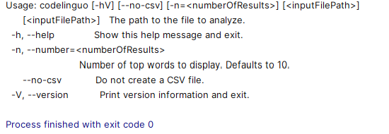
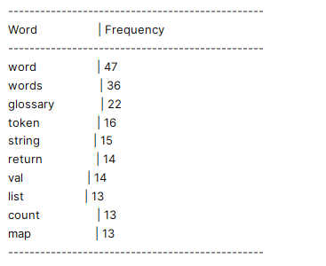
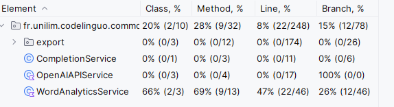
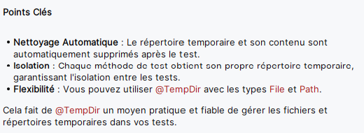

4. Quid d'un assistant de code pour la reprise d'un projet complexe existant (legacy code)¶
- 4.1.b Garder une trace de la vision globale du projet dans un README
-
4.2 Mettre en place un environnement de développement fonctionnel
- 4.3.a Bien comprendre les choix de conception et le code existant
- 4.3.b Aider à la mise en place de nouveaux tests unitaires
- 4.3.c Aider au refactoring
-
4.4 Proposer des pistes d'amélioration sur des problématiques sensibles
Dans un article récent intitulé Legacy Modernization meets GenAI, Martin Fowler a écrit :
Jusqu'à présent, la majorité de l'attention portée à l'intelligence artificielle générative (GenAI) dans le développement logiciel est axée sur la génération de code. Mais nous croyons qu'il y a autant, voire plus, de valeur dans la compréhension du code existant - en particulier des systèmes hérités complexes, volumineux et anciens.
GitHub Copilot est un outil d'IA générative pour le code parmi d'autres (Codeium, Cursor, Supermaven, Tabnine,..) qui peut nous aider dans ce sens, en nous fournissant aussi bien une vue d'ensemble d'un système, qu'en détaillant des points précis d'un code legacy pour mieux le comprendre et éventuellement en améliorer sa qualité.
Pour ce tutoriel, vous utiliserez le code du projet codelinguo développé par un groupe d'étudiants de 3ème année de BUT Informatique dans le cadre d'une SAE (Situation d'Apprentissage et d'Évaluation).
Vous commencerez donc par cloner ce projet : https://github.com/carlodrift/codelinguo
et ouvrirez ce projet dans votre IDE préféré muni de Copilot (IntelliJ ou Visual Studio).
Disclaimer : Tout au long de ce tutoriel, restez attentif aux réponses fournies par votre assistant de code. Comme tout outil d'IA générative, il peut parfois produire des "hallucinations". Bien que ces outils soient très pratiques, il est essentiel de garder un esprit critique. Votre libre arbitre reste indispensable pour faire la part des choses entre les suggestions de l'assistant et la réalité de votre projet.
Pour le moment, contentez-vous uniquement d'ouvrir ce projet dans votre IDE préféré.
Pour obtenir une vue d'ensemble du projet, il n'est pas utile d'essayer de compiler ou de builder le projet (ce point sera traité un peu plus tard).
Ayez juste le code de votre projet sous les yeux dans l'IDE, avec un chat Copilot ouvert, et laissez-vous guider...
4.1 Avoir une vision et une compréhension globale du projet¶
4.1.a Première vision globale du projet¶
Après avoir ouvert le chat de votre assistant de code dans votre IDE, vous pouvez interagir avec lui, que ce soit en français ou en anglais, de manière plus ou moins détaillée comme vu précédemment.
-
Commencez, par exemple, par lui demander une vision globale du projet en anglais :
describe this project -
ou en français :
Pourrais-tu me décrire ce projet -
ou même en utilisant des agents de conversation
/explain @workspace
Au-delà de votre assistant de code, vous disposez toujours de votre expérience/expertise en développement logiciel. Explorez également manuellement le projet dans votre IDE (architecture, noms des classes…). En dépliant l'arborescence du projet, vous constatez qu'il est structuré autour de :
- 3 modules Maven :
cli,common,desktop - 1 module Gradle :
intellij-plugin
Selon votre expérience/expertise, vous avez peut-être envie de poser des questions supplémentaires à votre assistant :
À quoi correspond cli ? desktop ? intellij-plugin ? common ? dans ce projet
Et si vous lui reposez ensuite la question :
Pourrais-tu me décrire le projet ?
La réponse sera plus détaillée que précédemment, car au fil des discussions, l'assistant enrichit son contexte des informations apprises lors des échanges précédents.
Au-delà des questions techniques, vous pouvez également interroger l'assistant sur la finalité de l'application avec des questions telles que :
Quel est selon toi le contexte métier de l'application ?
À quoi sert cette application ?
4.1.b Garder une trace de la vision globale du projet dans un README¶
Dans un projet collaboratif, le fichier README est essentiel pour fournir une vue d'ensemble et aider les collaborateurs à se familiariser rapidement avec le projet.
Le projet que vous avez récupéré n'en contient pas ? Pas de souci, vous pouvez demander à l'assistant de générer un README basé sur ce qu'il a vu dans le projet, en utilisant par exemple le prompt suivant :
@workspace generate a readme document that can be used as a repo description
Remarque : Pour l'instant, vous êtes juste en mode exploration du projet avec votre assistant de code, sans intention d'ajouter de code. Si plus tard vous décidez d'inclure un
READMEdans le projet, vous pourrez réutiliser le prompt précédent. Grâce aux nombreuses interactions que vous aurez eues entre-temps, leREADMEgénéré n'en sera que plus détaillé et pertinent.
4.1.c Approfondir la vision globale du projet¶
Pour aller plus loin dans votre compréhension, continuez à interroger/challenger l'assistant sur les points d'entrée du système et quelques classes métier de l'application.
Explorer les points d'entrée du système¶
Votre assistant vous a déjà peut-être mentionné les points d'entrée, n'hésitez pas à lui demander explicitement de les énumérer à nouveau :
Quels sont les points d'entrée du système ?"
Remarque : La réponse que vous obtiendrez peut être une hallucination (sur le nom de la classe considérée comme point d'entrée), mais elle devrait néanmoins vous guider dans la bonne direction.
-
Commencez par ouvrir le fichier
Main.javadans le modulecli(fr.unilim.codelinguo.cli) et, de la même manière que tout ce qui a été fait précédemment, posez des questions comme :
Pourrais-tu me décrire ce code ?/explain this,
/explain this class
(à vous de voir le type de formulation et le(s) langue(s) que vous préférez utiliser) -
De la même manière, ouvrez le fichier
Main.ktdans le moduledesktop(fr.unilim.codelinguo.desktop) et discutez avec votre assistant de code. -
Enfin, ouvrez le fichier
Main.javadans le moduleintellij-plugin(fr.unilim.codelinguo.intellijplugin) et échangez avec votre assistant.
Dans les réponses de l'assistant, certains noms de classes métier, comme FileReader et WordAnalyticsService, vont probablement ressortir plusieurs fois. Cela devrait vous inciter à explorer le module common pour en apprendre davantage sur le domaine métier de l'application.
Explorer le métier¶
Vous pouvez explorer le côté métier de l'application de manière plus ou moins détaillée.
Par où commencer ? Pourquoi ne pas débuter avec la classe WordAnalyticsService, mentionnée lors de vos précédents échanges ?
Zoom sur la classe WordAnalyticsService¶
-
Pour commencer, localisez la classe dans le projet et ouvrez la classe. Pour cela, aidez-vous de l'assistant en lui demandant :
Où se trouve la classe WordAnalyticsService ? -
Une fois la classe ouverte, engagez la discussion avec l'assistant pour obtenir une vision globale de la classe :
Que fait ce code ?Pourquoi la classe WordAnalyticsService ?(pour une réponse plus métier)/explain this(pour une réponse plus technique expliquant comment le code fonctionne)
Vous venez d'obtenir des réponses plus ou moins détaillées, plus ou moins orientées métier, plus ou moins techniques. Il est donc important de remarquer que, outre le caractère probabiliste des réponses générées par une IA Générative, le style et le contenu de la réponse vont être différents suivant la manière dont vous posez vos questions (prompt).
Pour vous en convaincre, testez différentes formulations pour voir comment elles influencent les réponses de l'assistant :
Pourrais-tu me décrire la classe WordAnalyticsServicePourrais-tu m'expliquer la classe WordAnalyticsServiceA quoi sert la classe WordAnalyticsService ?Explain how the code works ?Explain how this code can be used ?Explain why this code exists ?...
Lorsque vous échangez avec une IA générative, pour obtenir des réponses pertinentes, il est important d'apprendre à bien communiquer avec cette IA, un peu comme on apprendrait à communiquer dans une nouvelle langue étrangère (utiliser les bonnes formulations, les mots adéquats, poser les questions au bon moment…). Il est donc nécessaire de vous entraîner à discuter avec votre IA afin de trouver les formulations et le mode d'expression qui correspondent à vos besoins. Prendre le temps d'apprendre à formuler votre prompt avec précision est un passage essentiel pour obtenir des réponses précises et être encore plus productif avec votre IA
Disclaimer : À long terme, votre style de communication différera sûrement du phrasé proposé dans ce tutoriel. Ce tutoriel est uniquement conçu pour vous aider à survoler quelques cas d'usage qui pourraient vous être utiles au quotidien, en se basant sur des interactions simples. Libre à vous, par la suite, de personnaliser et perfectionner votre langage pour interagir efficacement avec votre assistant de code préféré.
- Il est maintenant temps d'explorer les dépendances de la classe
WordAnalyticsService.
Posez la question suivante à l'assistant :Quelles sont les dépendances de cette classe ?En fonction de la réponse obtenue, continuez la discussion : Pourquoi la classe Word ?Que fait le code de la classe Word ?[...]N'hésitez pas à poursuivre les échanges avec l'assistant pour approfondir votre compréhension de cette classe.
IDE ou Assistant ?¶
Ouvrez maintenant la classe Glossary et interagissez, comme à votre habitude, avec l'assistant :
Pourquoi la classe Glossary ?Que fait ce code ?/explain this[...]
Ensuite, posez la question suivante :
Pourrais-tu me donner toutes les classes qui dépendent de Glossary ?
Il est fort probable que votre assistant vous suggère, pour un tel cas d'usage, de plutôt utiliser les outils de l'IDE pour une réponse plus complète. Vous devriez obtenir des réponses du type : Pour une analyse complète, il serait nécessaire de rechercher toutes les occurrences de Glossary dans le projet ou Pour une recherche exhaustive, vous pouvez utiliser les fonctionnalités de recherche de votre IDE (IntelliJ IDEA) pour trouver toutes les occurrences de Glossary dans le projet.
C'est donc le bon moment pour rappeler qu'il est essentiel d'utiliser son assistant de code de manière réfléchie et pour des cas d'usages pertinents, d'autant plus que les requêtes faites auprès d'outils d'IA générative ont un coût énergétique très (voire trop) élevé de nos jours comme le mentionne un article de la Tribune Futurs de Novembre 2024
Zoom sur la classe FileReader¶
Lors de vos premiers échanges sur la vision globale du projet, la classe FileReader a probablement été mentionnée par votre assistant. C'est le moment d'en apprendre davantage sur elle.
Ouvrez la classe FileReader et discutez avec votre assistant :
Pourquoi la classe FileReader ?Que fait ce code ?/explain this[...]
Les réponses fournies par votre assistant ne vous auraient-elles pas donné envie d'aller explorer la classe JavaFileParser ?
Zoom sur la classe JavaFileParser¶
Ouvrez la classe JavaFileParser et engagez la discussion :
Pourquoi la classe JavaFileParser ?Que fait ce code ?/explain this[...]
Demandez ensuite à votre assistant :
Où est utilisée la classe JavaFileParser ?-
→ Si vous avez de la chance (que les probabilités sont avec vous), l'assistant pourrait vous révéler l'extrait de code suivant tiré de la classe
FileReader:kotlin private val fileSanitizers = mapOf( ".java" to JavaFileParser(), ".kt" to KotlinFileSanitizer(), ".py" to PythonFileSanitizer(), ".js" to JavascriptFileSanitizer(), ".html" to HtmlFileSanitizer() ) -
→ Si vous n'avez pas eu la chance d'obtenir ce bout de code, reformulez votre question :
Montre-moi comment est utilisé JavaFileParser ?
Si vous n'obtenez toujours pas le bout de code recherché (les réponses des IA génératives étant probabilistes, même avec une formulation très précise, il est impossible de garantir un résultat), allez directement dans la classe FileReader pour vérifier que ce bout de code y est bien présent.
Comme mentionné en début de tutoriel, quelle que soit la réponse obtenue, il est toujours préférable de vérifier sa cohérence avec le contenu du projet pour s'assurer qu'il ne s'agit pas d'une hallucination. Ainsi, dans tous les cas, un bon réflexe consiste à aller vérifier que le code est bien présent dans la classe FileReader.
Essayer de comprendre rapidement un choix de conception¶
Relisez attentivement l'extrait de code précédent.
La lecture de ce code ne soulève-t-elle pas chez vous quelques questions du genre :
Pourquoi utilise-t-on JavaFileParser pour les fichiers .java, alors que pour d'autres langages, on emploie des Sanitizers ? D'autant plus qu'en explorant l'arborescence, vous remarquez qu'un fichier JavaFileSanitizer existe bien dans le projet.
Si vous ne souhaitez pas passer trop de temps à comprendre ce choix de conception, demandez directement à l'assistant de vous éclaircir sur ce point :
Où est utilisée la classe JavaFileSanitizer ?Pourquoi utiliser JavaFileParser plutôt que JavaFileSanitizer ?Quand faut-il utiliser JavaFileParser et quand JavaFileSanitizer ?[...](à vous de trouver la bonne formulation pour élucider et comprendre rapidement ce choix de conception qui peut paraître étonnant à la lecture de code)
Vision plus globale du métier (module common)¶
Les interactions précédentes ont permis à votre assistant de code, ainsi qu'à vous-même, d'en apprendre un peu plus sur le projet.
En ce qui concerne le module common, vous avez, jusqu'à présent, exploré certains points de détails de ce module. Pour obtenir une vision plus générale de ce module et mieux comprendre son rôle dans le projet, demandez à votre assistant :
Pourrais-tu me décrirecommon?Que comprends-tu de la problématique métier de cette application ?[...]
Pensez-vous que les réponses apportées par l'assistant ont été influencées par les interactions que vous avez eues précédemment ?
Vision plus globale du projet et précision des réponses¶
Au fur et à mesure que vous échangez avec votre assistant de code, ses réponses deviennent de plus en plus précises. Si vous lui demandez à nouveau une vision globale du projet avec les mêmes questions qu'au début de la discussion :
Describe this projectPourrais-tu me décrire ce projet/explain this project[...]
Vous constaterez que les réponses sont plus détaillées et spécifiques qu'au début de la discussion. Cela s'explique par le fait que, lors de vos interactions, l'assistant a exploré différentes parties du projet en fonction des questions posées. Il a ainsi mémorisé des informations sur ces parties, lui permettant d'affiner son contexte et donc de fournir des réponses plus pertinentes et ciblées.
Cela montre l'importance d'interagir progressivement, étape par étape, avec votre assistant de code. En posant des questions de plus en plus précises, vous affinez la compréhension du projet et améliorez la qualité des réponses de l'assistant.
Toutefois, une des limites actuelles des assistants de code est que la mémoire est limitée à la session/discussion en cours. Si vous démarrez une nouvelle session, la connaissance acquise sur le projet sera perdue. À ce jour, il n'y a pas de mémoire à long terme ou RAG (Retrieval Augmented Generation) dans les assistants de code. Cependant, des évolutions sont sûrement en préparation, comme le montre la fonctionnalité de mémoire entre conversations récemment introduite dans les versions de ChatGPT.
4.2 Mettre en place un environnement de développement fonctionnel¶
Jusqu'à présent, l'assistant de code vous a uniquement aidé à comprendre le comportement du code existant, sans vérifier si ce dernier était compilable et fonctionnel.
Si vous souhaitez aller plus loin avec ce code (effectuer du refactoring, ajouter de nouvelles fonctionnalités, etc.), il devient nécessaire de faire compiler ce projet et de l'exécuter dans votre IDE préféré.
Pour continuer ce tutoriel, l'objectif est simple : assurez-vous que le projet compile et que vous pouvez lancer le
maindu moduleclidepuis l'IDE. (Concentrez-vous uniquement sur cemain, cela garantit déjà un environnement de développement fonctionnel.)
Dès que vous pouvez exécuter (Runner) le Main du module cli depuis votre IDE et que vous visualisez une exécution correcte dans la console (comme montré dans l'exemple ci-dessus pour une exécution du main sans paramètre), vous serez prêt à poursuivre.

Ensuite, toujours depuis l'IDE, lancez le Main du module cli en passant comme premier (et seul) paramètre le chemin absolu du fichier WordAnalyticsService.java du projet codelinguo que vous avez sous les yeux.
Si tout se déroule correctement, vous devriez voir un affichage dans la console similaire à la capture d'écran ci-dessous :

Bien entendu, l'assistant de code est aussi votre ami pour résoudre des problèmes liés au bon fonctionnement de votre IDE ou à votre environnement de travail. Il ne se limite pas à l'interaction avec le code.
Si nécessaire, n'hésitez pas à solliciter son aide en lui posant, par exemple, l'une des questions suivantes :
Comment lancer le main du module cli ?Comment lancer le main du module cli depuis l'IDE ?Comment lancer le main du module cli depuis l'IDE en passant le chemin absolu du fichier WordAnalyticsService.java comme paramètre ?[...]Continuez éventuellement cette discussion en fonction de vos besoins et de votre expérience si vous avez besoin d'informations supplémentaires pour arriver à vos fins, c'est-à-dire obtenir des affichages similaires aux captures d'écran ci-dessus.
4.3 Améliorer la qualité de code d'un projet existant¶
Pour cette dernière partie, nous allons nous focaliser sur la classe JavaFileParser.
Commencez par ouvrir la classe JavaFileParser.
4.3.a Bien comprendre les choix de conception et le code existant¶
Avant de procéder à un quelconque refactoring pour améliorer la qualité du code de cette classe, il est essentiel de bien comprendre le comportement de cette classe et d'avoir une bonne vision du code existant.
Se rafraîchir la mémoire sur le comportement de la classe :**¶
Vous avez déjà eu de nombreuses interactions avec cette classe ; une simple question à votre assistant de code devrait vous aider à vous rafraîchir la mémoire :
Pourquoi la classe JavaFileParser ? Réponds-moi en français.
Remarque : Au cours de vos précédents échanges avec votre assistant, outre les hallucinations, vous avez sûrement observé des comportements étranges dans les réponses de votre assistant (encore une fois dus au côté probabiliste des modèles de langage (LLM) et à leur entraînement). Par exemple :
- Si vous posez une question en anglais, l'assistant répond généralement en anglais.
- Si vous posez une question en français, la réponse peut être en français, en anglais, ou même en "franglais"(des mots anglais perdus dans le français). Ainsi si vous souhaitez absolument une réponse en français, mieux vaut le préciser au début de votre prompt...
Explorer le concept d'AST (Abstract Syntax Tree)¶
Dans la réponse de l'assistant, vous avez surement vu apparaître le terme AST.
Vous pouvez approfondir ce concept avec des questions telles que :
Peux-tu m'expliquer ce qu'est un AST ? (en français)Peux-tu me donner des exemples précis d'AST ?[...]
Comprendre l'implémentation de l'AST dans JavaFileParser¶
Pour aller plus loin, vous pouvez demander :
Où et comment l'AST est-il implémenté dans la classe JavaFileParser ?
Explorer la méthode processFile¶
En analysant les réponses de l'assistant, vous avez probablement relevé des termes métiers et des extraits de code liés à la méthode processFile. Vous décidez donc d'en savoir un peu plus sur cette implémentation :
Peux-tu m'expliquer le code de processFile
Le Pattern Visiteur et VoidVisitorPattern¶
La réponse de l'assistant mentionne sûrement les termes visiteur et VoidVisitorPattern. Le pattern visiteur du GoF (Gang of Four) vous est peut-être familier, et dans le code de processFile, vous avez remarqué des méthodes accept et visit, caractéristiques de ce pattern. Mais quel est donc ce pattern ? Y-a-il un lien avec le pattern du GoF ? Pour clarifier, demandez :
Peux-tu m'en dire plus sur le VoidVisitorAdapter ?
Rappel : Pour consulter le code de la classe
VoidVisitorAdapter, pas besoin d'utiliser l'assistant de code ; l'IDE est bien sûr votre ami pour ce cas d'usage. Depuis le code de la classeJavaFileParser, un simple CTRL+clic surVoidVisitorAdapterouvrira le code de cette classe. Vous pourrez ainsi visualiser toutes les méthodesvisitqu'elle contient et observer également qu'elle implémenteVoidVisitor.
Après ces échanges, l'implémentation de la méthode processFile devrait vous paraître plus claire et correcte.
4.3.b Aider à la mise en place de nouveaux tests unitaires¶
1. Améliorer la couverture de code de la classe WordAnalyticsService¶
-
Dépliez la branche de test (
src/test/...) du modulecommonpour vérifier que la classeWordAnalyticsServicepossède déjà une classe de testWordAnalyticsServiceTest. -
Ouvrez la classe
WordAnalyticsServiceTestet exécutez les tests de cette classe pour vérifier que le code compile et que tous les tests passent. -
Relancez les tests en demandant cette fois-ci la couverture de code.

-
Consultez le code de la classe
WordAnalyticsServiceafin de constater que la méthodeglossaryCoverageRation'est actuellement pas couverte par les tests. Demandez à votre assistant de vous aider à couvrir cette méthode, par exemple, avec la commande :
/tests glossaryCoverageRatio -
Placez-vous à la fin de la classe
WordAnalyticsServiceTestet insérez le code fourni par l'assistant (utilisez le bouton Insert Code Block at Cursor dans le chat). -
Si besoin, ajoutez les
importpour faire compiler le code. -
Exécutez les tests (et si l'un d'entre eux échoue à cause d'une valeur
null, supprimez-le), puis relancez l'analyse de couverture de code. Vous devriez constater une augmentation du pourcentage de la couverture à tous les niveaux : méthodes, lignes et branches, grâce aux tests ajoutés.
2. Tester la classe JavaFileParser¶
-
Consultez à nouveau la branche de test (
src/test/...) du modulecommonet notez que la classeJavaFileParsern'a pas encore de classe de test associée. -
Ouvrez la classe
JavaFileParseret demandez à votre assistant de vous aider à créer des tests avec la commande
/tests -
Créez au bon endroit la classe
JavaFileParserTestet insérez-y le code généré par l'assistant. -
Si besoin, ajoutez les
importpour faire compiler le code. -
Si une erreur de compilation nécessite de modifier la visibilité du code de production, ne modifiez pas le code existant et supprimez le test concerné, vous en avez d'autres à votre disposition.
-
Exécutez les tests.
Il est probable que les tests échouent en raison de données de tests contenant des chemins de fichiers en dur pointant vers des fichiers inexistants. Cela sera notamment le cas si l'assistant vous a généré un code de test similaire au suivant :
kotlin
@Test
fun processFile_withEmptyJavaFile_returnsEmptyList() {
val parser = JavaFileParser()
val path = "src/test/resources/EmptyJavaFile.java"
val words = parser.processFile(path)
assertTrue(words.isEmpty())
}
Pour éviter ce type d'erreurs, une solution consiste à utiliser des fichiers temporaires grâce à l'annotation @TempDir.
- Si vos tests ont échoué en raison de la mauvaise qualité des données de tests :
- Supprimez tous les tests de la classe
JavaFileParserTestet précisez dans votre prompt que vous souhaitez des tests utilisant@TempDir:
/tests en utilisant @TempDir -
Insérez le nouveau code généré dans le fichier
JavaFileParserTest. Si besoin, ajoutez lesimportpour faire compiler le code. -
Dans tous les cas, exécutez à nouveau les tests. La plupart des tests devraient passer.
Si un test échoue, mettez-le pour le moment en@Disabled(peut-être que le comportement qu'il teste n'a pas encore été implémenté) ou supprimez-le s'il ne correspond pas à vos (futurs) besoins. Le test le plus susceptible de poser problème est celui qui vérifie le comportement d'un fichier inexistant, et qui pourrait s'appelerprocessFile_withNonExistentFile_returnsEmptyListet qui nécessiterait donc une modification de la logique métier pour s'assurer que le code traite correctement les fichiers manquants. -
Par curiosité, lancez la couverture de code. Bien sûr, l'assistant n'a probablement pas couvert la classe à 100 %, mais il a amorcé l'écriture de tests, vous donnant une première base. À vous ensuite de décider si vous souhaitez compléter cette suite de tests pour améliorer la couverture de code sur cette classe.
-
À partir de cette base de tests, vous pouvez :
- continuer à écrire d'autres tests manuellement en vous inspirant des tests générés.
-
continuer d'interagir avec l'assistant en lui donnant des consignes plus ou moins précises, après avoir identifié les parties du code qui ne sont pas encore couvertes, par exemple :
Pourrais-tu m'écrire deux autres tests pour améliorer la couverture de code ?Ajoute un test qui couvre visit de MethodDeclaration et visit de Parameter.
-
Et pour augmenter encore plus rapidement la couverture de code, sélectionnez tout le code de la méthode
processFileet demandez à votre assistant de générer les tests :
/tests
Insérez le code de test généré dansJavaFileParserTestet relancez la couverture.
Cette expérience illustre plusieurs points :
L'assistant de code est un bon outil pour démarrer sur une page blanche.
Mais attention, l'assistant de code n'est pas exhaustif dans sa réponse ; il ne vous proposera qu'une partie des tests ou des exemples, et ne fera donc pas tout le travail à votre place.
Pour des réponses plus complètes, il est nécessaire de continuer à dialoguer avec l'assistant en formulant des demandes plus ou moins précises : un prompt pas à pas est une bonne pratique.
Restez toujours vigilant par rapport aux réponses générées et (ab)usez de votre libre-arbitre et de votre esprit critique pour détecter d'éventuelles hallucinations et ne conserver que les réponses qui conviennent à vos besoins.
Comme l'historique des échanges est utilisé par l'assistant pour affiner le contexte, il est conseillé de nettoyer régulièrement le chat en supprimant les requêtes non pertinentes ou qui n'ont pas donné le(s) résultat(s) attendu(s).
Le caractère probabiliste des réponses de l'assistant présente des inconvénients et des avantages. D'un côté, la qualité des données de test générées n'est pas toujours garantie. Toutefois, cet aspect non déterministe peut aussi conduire à la découverte de nouvelles, voire meilleures, pratiques.
Personnellement, lors d'une première demande de génération de tests, l'annotation@TempDir, utilisée pour les répertoires temporaires, a été découverte. Malheureusement, ce fut la seule fois où l'assistant l'a utilisée. Peut-être avez-vous eu la chance d'obtenir des tests unitaires fonctionnels du premier coup, ou peut-être pas 😉.
- Et vous, connaissiez-vous
@TempDiravant cette expérience ?
Votre assistant peut vous aider à en savoir plus en posant la question suivante :
Pourrais-tu m'en dire plus sur @TempDir ?
La réponse de l'assistant sera probablement similaire à la capture d'écran ci-dessous :

4.3.c Aider au refactoring¶
Maintenant que le comportement est couvert par des tests, vous pouvez envisager sereinement un petit refactoring. Pour cela, demandez à l'assistant de vous proposer des améliorations en utilisant les commandes suivantes :
/fix (vous pouvez préciser le nom de la méthode si vous souhaitez rester focalisé sur celle-ci)
/simplify
-
Par exemple, revenez sur la
WordAnalyticsService, demandez :
/fix glossaryCoverageRatio
/simplify -
Faites de même pour la
JavaFileParser, demandez :
/fix
/simplify
Dans les deux cas, l'assistant vous proposera des modifications, mais c'est à vous de décider si vous souhaitez les intégrer dans votre code (le fameux libre arbitre).
4.3.d Aider à la revue de code¶
Même sans avoir mis en place un harnais de tests, vous pouvez demander à votre assistant de code de vous proposer des suggestions de refactoring sur des bouts de code plus ou moins volumineux.
Revenez sur la classe Main du module cli, ouvrez le code de cette classe et portez votre attention sur la méthode processPath, qui peut paraître un peu longue.
Pour effectuer une rapide revue de code sur cette classe , demandez à l'assistant :
/fix/simplify
Ces commandes devraient déjà vous donner des pistes pour améliorer la lisibilité de processPath.
Vous pouvez ensuite approfondir l'analyse en posant vos propres questions, celles que vous vous posez habituellement lors d'une revue de code : `
Y a-t-il des code smells dans ce bout de code ?Y a-t-il des principes SOLID non respectés dans ce code ?Le code peut-il être optimisé en termes de performance ou de lisibilité ?La duplication de code est-elle présente ?Y a-t-il des dépendances cycliques ou des responsabilités mal définies ?[...]
Lorsque vous échangez avec votre assistant des questions de qualité de code, celui-ci peut également vous suggérer d'explorer des aspects tels que la lisibilité, la maintenabilité ou la modularité du code en vous proposant de lui poser les questions suivantes :
How can I improve the readability of the selected code?How can I improve the maintainability of the selected code?How can I improve the modularity of the selected code?How can I refactor the code to improve modularity?What are some options for simplifying the code?
Même si ces questions ne vous seront pas automatiquement proposées par l'assistant au moment où vous le souhaiteriez, il est toujours utile de les garder en tête comme une boîte à outils de prompts pour améliorer la qualité de votre code à tout moment.
4.4 Proposer des pistes d'amélioration sur des problématiques sensibles¶
Pour terminer ce tutoriel, il pourrait être intéressant de challenger votre assistant de code sur des problématiques sensibles, notamment celles dans lesquelles vous n'êtes pas expert.
Prenons par exemple les questions de sécurité.
Vous pourriez commencer avec un prompt comme :
Comment pourrais-tu améliorer la sécurité dans ce projet ?[…]suivant la réponse obtenue, n'hésitez pas à approfondir certains points pas à pas avec votre assistant.
Votre assistant vous proposera probablement de continuer avec les questions suivantes :
What are some best practices for securing a Java project?What are some common security vulnerabilities in Java projects?[…]suivant la réponse obtenue, n'hésitez pas à approfondir certains points pas à pas avec votre assistant, par exemple :Y a-t-il un risque d'exposition de données sensibles (Sensitive Data Exposure) dans ce projet ?[…]
Vous aurez peut-être aussi des questions plus basiques à lui poser :
Concrètement, pourrais-tu me montrer où et comment mieux gérer les exceptions dans ce projet ?[…]
Bien sûr, si vous n'êtes pas expert en sécurité, il est recommandé de consulter un spécialiste avant d'adopter les propositions de l'assistant de code. Comme nous l'avons souvent souligné dans ce tutoriel, cet outil est là pour vous assister, mais seule l'expertise humaine peut déterminer si une suggestion de l'assistant est pertinente et doit être intégrée dans l'application.
Il est également essentiel de garder à l'esprit que les outils d'IA générative sont uniquement des aides pour vous rendre plus productif et créatif. Ils ne sont pas à l'abri des erreurs ou des hallucinations. Vous restez maître de votre travail, et la décision finale vous appartient.
Si vous souhaitez en savoir plus sur le projet qui se cache derrière le code utilisé dans cette partie du tutoriel, vous pouvez consulter le dépôt suivant : https://github.com/iblasquez/ubiquitous-langage-code-quality
Accédez donc maintenant à la partie suivante qui est : Liens utilisés pour la rédaction du tutorielou retournez à l'Accueil.